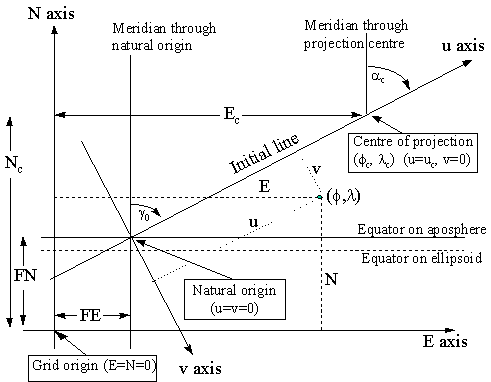

1.4.7. Oblique Mercator and Hotine Oblique Mercator
It has been noted that the Transverse Mercator map projection method is employed for the topographical mapping of longitudinal bands of territories, limiting the amount of scale distortion by limiting the extent of the projection either side of the central meridian. Sometimes the shape, general trend and extent of some countries makes it preferable to apply a single zone of the same kind of projection but with its central line aligned with the trend of the territory concerned rather than with a meridian. So, instead of a meridian forming this true scale central line for one of the various forms of Transverse Mercator, or the equator forming the line for the Mercator, a line with a particular azimuth traversing the territory is chosen and the same principles of construction are applied to derive what is now an Oblique Mercator. Such a single zone projection suits areas which have a large extent in one direction but limited extent in the perpendicular direction and whose trend is oblique to the bisecting meridian - such as East and West Malaysia, Madagascar and the Alaskan panhandle. It was originally applied at the beginning of the 20th century by Rosenmund to the mapping of Switzerland, and in the 1970’s adopted in Hungary. The projection's initial line may be selected as a line with a particular azimuth through a single point, normally at the centre of the mapped area, or as the geodesic line (the shortest line between two points on the ellipsoid) between two selected points.
EPSG identifies two forms of the oblique Mercator projection, differentiated only by the point at which false grid coordinates are defined. If the false grid coordinates are defined at the intersection of the initial line and the aposphere, that is at the natural origin of the coordinate system, the map projection method is known as the Hotine Oblique Mercator (EPSG coordinate operation method code 9812). If the false grid coordinates are defined at the projection centre the projection method is known as the Oblique Mercator (EPSG coordinate operation method code 9815).
Hotine projected the ellipsoid conformally onto a sphere of constant total curvature, called the ‘aposphere’, before projection onto the plane. This projection is sometimes referred to as the Rectified Skew Orthomorphic. Formulas, involving hyperbolic functions, were derived by Hotine. Snyder adapted these formulas to use exponential functions, thus avoiding use of Hotine's hyperbolic expressions. Alternative formulas derived by projecting the ellipsoid onto the ‘conformal’ sphere give identical results within the practical limits of the use of the formulas.
Snyder describes a variation of the Hotine Oblique Mercator where the initial line is defined by two points through which it passes. The latter approach is not currently followed by EPSG/POSC; it has been applied to mapping space imagery or, more frequently, for applying a geographical graticule to the imagery. However, the repeated path of the imaging satellite does not actually follow the centre lines of successive oblique cylindrical projections so a projection was derived whose centre line does follow the satellite path. This is known as the Space Oblique Mercator Projection and although it closely resembles an oblique cylindrical it is not quite conformal and has no application other than for space imagery.
The oblique Mercator co-ordinate system is defined by:

Figure 7. Key Diagram for Oblique Mercator Projection
The initial line central to the map area of given azimuth a c passes through a defined centre of the projection (j c , l c ) . The point where the projection of this line cuts the equator on the aposphere is the origin of the (u , v) co-ordinate system. The u axis is parallel to the centre line and the v axis is perpendicular to (90° clockwise from) this line.
In applying the formulas for the (Hotine) Oblique Mercator the first set of co-ordinates computed are referred to the (u, v) co-ordinate axes defined with respect to the azimuth of the centre line. These co-ordinates are then ‘rectified’ to the usual Easting and Northing by applying an orthogonal conversion. Hence the alternative name as the Rectified Skew Orthomorphic. In the special case of the projection covering the Alaskan panhandle the azimuth of the line at the natural origin is taken to be identical to the azimuth of the initial line at the projection centre. This results in grid and true north coinciding at the projection centre rather than at the natural origin as is more usual.
To ensure that all co-ordinates in the map area have positive grid values, false co-ordinates are applied. These may be given values (Ec , Nc) if applied at the projection centre [EPSG Oblique Mercator method] or be applied as false easting (FE) and false northing (FN) at the natural origin [EPSG Hotine Oblique Mercator method].
The formulas can be used for the following cases:
Alaska State Plane Zone 1
Hungary EOV
Madagascar Laborde Grid
East and West Malaysia Rectified Skew Orthomorphic grids
Swiss Cylindrical projection
The Swiss and Hungarian systems are a special case where the azimuth of the line through the projection centre is 90 degrees. These therefore give similar but not exactly the same results as a conventional Transverse Mercator projection.
Specific references for the formulas originally used in the individual cases of these projections are:
Switzerland: "Die Änderung des Projektionssystems der schweizerischen Landesvermessung." M. Rosenmund 1903. Also "Die projecktionen der Schweizerischen Plan und Kartenwerke." J. Bollinger 1967.
Madagascar: "La nouvelle projection du Service Geographique de Madagascar". J. Laborde 1928.
Malaysia: Series of Articles in numbers 62-66 of the Empire Survey Review of 1946 and 1947 by M. Hotine.
The defining parameters for the [Hotine] Oblique Mercator projection are:
j c = latitude of centre of the projection
l c = longitude of centre of the projection
a c = azimuth (true) of the centre line passing through the centre of the projection
g c = rectified bearing of the centre line
kc = scale factor at the centre of the projection
and either
for the Oblique Mercator
Ec = False Easting at the centre of projection
Nc = False Northing at the centre of projection
or for the Hotine Oblique Mercator:
FE = False Easting at the natural origin
FN = False Northing at the natural origin
From these defining parameters the following constants for the map projection may be calculated :
B = [1 + e2 cos4j c / (1 – e2 )]0.5
A = a B kc (1 – e2 )0.5 / (1 – e2 sin2 j c)
to = tan(p / 4 – j c / 2) / [(1 – e sin j c) / (1 + e sin j c)]e/2
D = B (1 – e2 )0.5 / [cosj c (1 – e2 sin2 j c)0.5]
To avoid problems with computation of F, if D < 1 make D2 = 1
F = D + (D2 – 1)0.5 . SIGN(j c)
H = F toB
G = (F – 1/F) / 2
g o = asin[sin (a c) / D]
l o = l c – [asin(G tang o)] / B
Then compute the (uc , vc) co-ordinates for the centre point (j c , l c).
vc = 0
In general
uc = (A / B) atan[(D2 – 1)0.5 / cos (a c) ]. SIGN(j c)
but for the special cases where a c = 90 degrees (e.g. Hungary, Switzerland) then
uc = A (l c – l o )
Forward case: To compute (E,N) from a given (j ,l ), for both the Hotine Oblique Mercator method and the Oblique Mercator method:
t = tan(p / 4 – j / 2) / [(1 – e sin j ) / (1 + e sin j )]e/2
Q = H / tB
S = (Q – 1/Q) / 2
T = (Q + 1/Q) / 2
V = sin(B (l – l o))
U = (– V cos(g o) + S sin(g o)) / T
v = A ln[(1 – U) / (1 + U)] / 2 B
Then
either (a) for the Hotine Oblique Mercator (where the FE and FN values have been specified with respect to the natural origin of the (u , v) axes):
u = A atan{(S cosg o + V sing o) / cos[B (l – l o)]} / B
The rectified skew co-ordinates are then derived from:
E = v cos(g c) + u sin(g c) + FE
N = u cos(g c) – v sin(g c) + FN
or (b) for the Oblique Mercator (where the false easting and northing values (Ec , Nc) have been specified with respect to the centre of the projection (j c , l c) then :
u = (A atan{(S cosg o + V sing o) / cos[B (l – l o)]} / B) – (uc . SIGN(l – l c))
The rectified skew co-ordinates are then derived from:
E = v cos(g c) + u sin(g c) + Ec
N = u cos(g c) – v sin(g c) + Nc
Reverse case: To compute (j ,l ) from a given (E,N) :
For the Hotine Oblique Mercator:
v’ = (E – FE) cos(g c) – (N – FN) sin(g c)
u’ = (N – FN) cos(g c) + (E - FE) sin(g c)
or for the Oblique Mercator:
v’ = (E – Ec) cos(g c) – (N – Nc) sin(g c)
u’ = (N – Nc) cos(g c) + (E – Ec) sin(g c) + uc
then for both cases:
Q’ = e- (B v ‘/ A) where e is the base of natural logarithms.
S’ = (Q’ – 1 / Q’) / 2
T’ = (Q’ + 1 / Q’) / 2
V’ = sin (B u’ / A)
U’ = (V’ cos(g o) + S’ sin(g o)) / T’
t’ = {H / [(1 + U’) / (1 – U’)]0.5}1 / B
c = p / 2 – 2 atan(t’)
+ sin(4c ).( 7 e4 /48 + 29 e6 / 240 + 811 e8 / 11520)
+ sin(6c ).( 7 e6 / 120 + 81 e8 / 1120) + sin(8c ).(4279 e8 / 161280)
l = l 0 – atan [(S’ cosg c – V’ sing c) / cos(B u’ / A)] / B
Examples:
For Projected Coordinate Reference System Timbalai 1948 / R.S.O. Borneo (m) using the Oblique Mercator method.
Parameters:
Ellipsoid: Everest 1830 (1967 Definition)
a = 6377298.556 metres 1/f = 300.8017
then e = 0.081472981 e2 = 0.006637847
Latitude of Projection Centre j c 4o00'00"N = 0.069813170 rad
Longitude of Projection Centre l c 115o00'00"E = 2.007128640 rad
Azimuth of central line ac 53o18'56.9537" = 0.930536611 rad
Rectified to skew gc 53o07'48.3685" = 0.927295218 rad
Scale factor ko 0.99984
Easting at Projection Centre Ec 590476.87 m
Northings at Projection Centre Nc 442857.65 m
Forward calculation for:
Latitude j 5o 23' 14.1129"N = 0.094025313 rad
Longitude l 115o 48' 19.8196"E = 2.021187362 rad
B = 1.003303209 F = 1.072121256
A = 6376278.686 H = 1.000002991
to = 0.932946976 go = 0.927295218
D = 1.002425787 lo = 1.914373469
D2 = 1.004857458
uc = 738096.09 vc = 0.00
t = 0.910700729 Q = 1.098398182
S = 0.093990763 T = 1.004407419
V = 0.106961709 U = 0.010967247
v = -69702.787 u = 163238.163
Then Easting E = 679245.73 m
Northing N = 596562.78 m
Reverse calculations for same Easting and Northing first gives :
v’ = -69702.787 u’ = 901334.257
Q’ = 1.011028053
S’ = 0.010967907 T’ = 1.000060146
V’ = 0.141349378 U’ = 0.093578324
t’ = 0.910700729 c = 0.093404829
Then Latitude j = 5o23'14.113"N
Longitude l = 115o48'19.820"E
If the same projection is defined using the Hotine Oblique Mercator method then:
False Easting Ec 0.00 m
False Northing Nc 0.00 m
u = 901334.257
and all other values are as for the Oblique Mercator method.